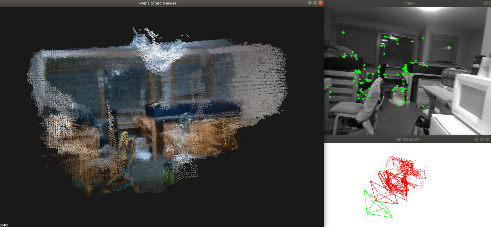
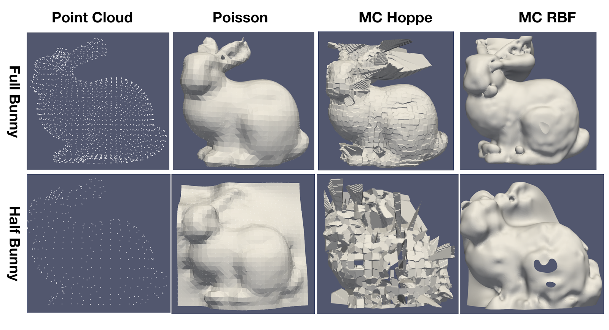
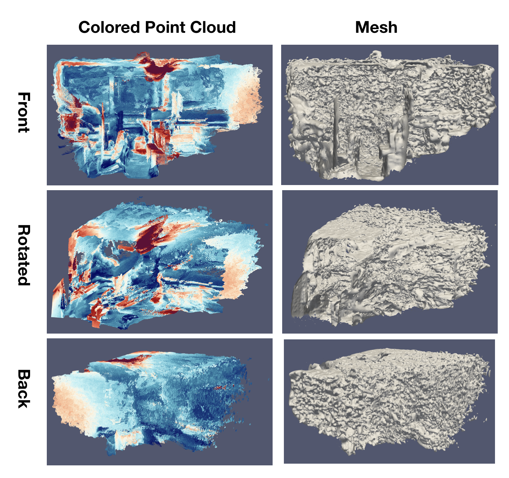

Our Reconstruction system comprises the visual odometry part and mesh reconstruction part.
The Visual Odometry System is divided into Frontend and Backend. The Visual Frontend is responsible for detecting and tracking feature points while localizing the camera pose in real time. We used GFTTDetector in OpenCV to detect feature points and used optical flow for tracking. When the tracked feature points are below a threshold, a new keyframe will be inserted, new features will be detected and backend optimization will be triggered. Backend optimization uses Bundle Adjustment to optimize camera poses of several keyframes and associated feature points jointly. We employed the Levenberg–Marquardt optimization algorithm implemented in g2o.
The visual odometry part outputs point cloud in the world coordinates for each frame. We then applied surface reconstruction techniques to generate mesh from the point cloud. Point Cloud Library (PCL) was used to process the point clouds. Namely, at each frame as more points being integrated into the fused point cloud, a VoxelGrid filter was applied to downsample the amount of points by constructing a voxel grid over the point cloud and represents the points sharing the same voxel with the voxel centroid. A Statistical Outlier Removal filter was applied to reduce noise. We have applied the Poisson surface reconstruction algorithm as well as the Marching cube algorithm to generate surface meshes, using PCL’s implementations.
We have completed the Visual Odometry and point cloud reconstruction as shown below. The top right image is an illustration of the detected feature points. The bottom right image is an illustration of Bundle Adjustment. Camera poses and associated feature points are shown in the image. The left image is a preliminary point cloud reconstruction result.
|

|
For mesh reconstruction, we first compared the following different surface processing techniques on the Stanford bunny: Poisson surface reconstruction, marching cube with signed distance functions estimated by Hoppe et al., or by radial basis function. All methods utilized KDTree as the acceleration structures.The figure below displays the reconstructed meshes using different methods. The top row shows the point cloud and meshes for a full bunny while the bottom row shows those for half of the bunny. The Poisson surface reconstruction produced mesh with the best quality compared with the marching cube methods. This could be due to a normal estimation issue of PCL. Since point normals are estimated to generate the signed distance function for use in the marching cube algorithm, a noisy normal estimate that generates inconsistent point normals will lead to broken meshes.
|

|
We therefore proceeded to use Poisson surface reconstruction to mesh our point cloud. The figure below displays the point cloud and the reconstructed meshes at different viewing angles. The color coding is based on the object colors. The reconstruction was able to represent the major objects present in the scene. However, the mesh has quite a lot of noise, especially in the back of the room where the depth estimation is noisy.
|

|
Generally we are progressing as planned. We have successfully set up the framework to estimate camera position, generate point clouds and reconstruct mesh. The plan for the next week is still to implement the marching cube reconstruction with truncated signed distance function (TSDF). Since TSDF represents the surface implicitly by a gradient field, rather than point based normals required by Poisson or Hoppe, it may help to reduce the noise in the reconstructed surface. We found an implementation of TSDF with the voxel hashing acceleration structure and plan to modify and integrate it into our framework.
We are on schedule, so there is nothing new to update.